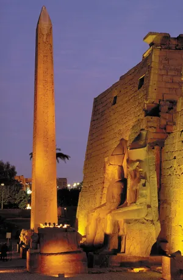
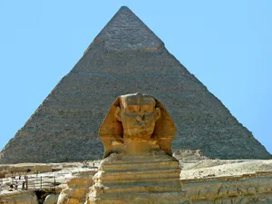
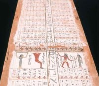
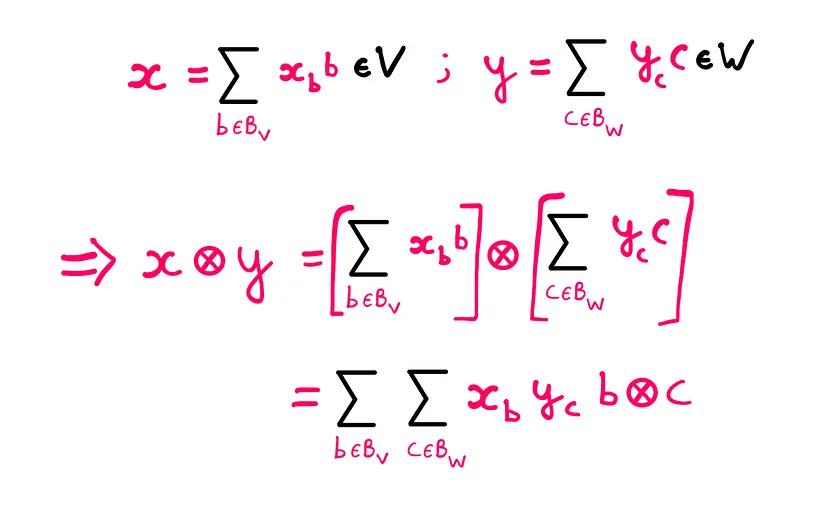

The ancient Egyptians have influenced much of modern history, they have started and created many objects and ideas that have remained thousands of years later in our modern world. The Egyptians had advanced calendars, mathematics, astronomy, architecture, writing, and more. Without the Egyptians we would not have as simple of a life as we do today, sadly much of original Egyptian knowledge has been lost with the thousands of years of foreign rule. But recently we have found much more information about ancient Egyptians that show much more about how they have influenced the modern world.
You can see based on these many examples of how ancient Egyptians affected the modern world with the trends that have lasted into the modern world. From architecture lasting forever, to studying the cosmos and building based on it, to mathematically creating circles and fractions. The ancient Egyptians have given us much of what we know, many talk about how smart the greeks and romans are, but the ancient Egyptians are some of the smartest. Furthermore with all these topics they have one common theme, it was started and developed by the Egyptians, we owe a great deal to the ancient Egyptians for creating it for us, then building off of it and making it better for us. We are truly in debt to the ancient Egyptians.
By Jonah Cheng & Hayden Dorf
Architecture


The ancient Egyptians are well renowned for their engineering and architectural prowess. Their structures are meant to symbolize the connection between god, the king, and humanities, and not only that the structures were also meant to symbolize the perfection at the creation of the world by the gods, this architecture caused it to not be changed for thousands of years. This construction is also emphasized in that fact that the pyramids at Giza are aligned towards the north indestructible stars. The ancient Egyptians started a power and perfection construction technique that has lasted many years to come into modern time. Not only that, their long lasting construction styles are like and most likely influenced, our government buildings, and religious buildings which have not changed much over thousands of years.
Astronomy

The ancient Egyptians noticed 2, so-called ‘indestructibles,’ stars which circled around the north pole. Today, the stars are known as Kochab and Mizar. The stars were only in the right position for a few years. They were the equivalent of the star Polaris today. Because of where the stars were, we can figure out when the pyramids were built, because Egyptians thought that “true” north was between the two stars. Anytime before or after 2467 BCE the Egyptian astronomers would have been less accurate. An example of this are the Great Pyramids at Giza. They were likely built within 10 years of 2480 BCE. The ancient Egyptians finding “north” through the stars is the equivalent of finding polaris to find north. Another topic relating to astronomy is calendars. The ancient Egyptian calendar was 365 days, with 3, 120-day seasons. The extra 5 days were clumped at the end of the year. The months were 30 days long. The ancient Egyptians did not include a leap year day. The calendar’s number of days is the same as the modern solar calendar, which means we may have gotten the amount partially from the ancient Egyptians.
Mathematics

Plato and Aristotle said that the Greeks owed much to the Egyptians for their mathematics. The ancient Egyptians mainly used trial and error methods to get to their answers. They used a decimal system without zeroes, since their decimal system was not positional. Multiplication and division were challenging and relied on doubling and halving. Fractions were stored in halves, fourths, and eighths(and other unit fractions, if possible). The ancient Egyptians knew a little algebra, but didn’t feel the need to create accurate formulas, as they thought that approximations were close enough to the real answers. Their approximation of Pi was 256/81, around 3.16, surprisingly close to 3.14. They got to Pi via brute force methods. The algebra they knew was linear functions, and simple quadratic equations by trial and error methods. Their unit of measurement was the cubit, about 52.3 cm. Their brute force methods are still used today by supercomputers, to find digits of pi.